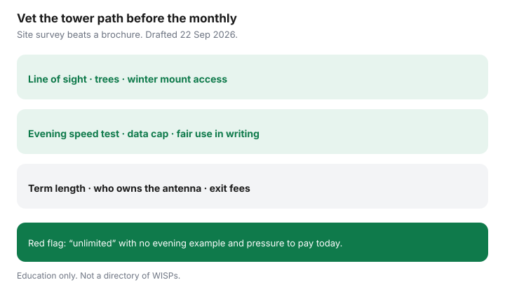

Internet · Canada
Fixed Wireless and WISPs in Rural Canada: How to Vet a Local Provider
A local wireless internet service provider (WISP) can beat aging DSL and delay a satellite dish — or it can sell you a hopeful antenna and evening slowdowns. Rural Canadian fixed wireless is a line-of-sight and contract problem first, a monthly sticker second. This checklist helps middle-aged households vet a provider before the truck climbs the roof.
Disclosure: Education only. WISP and national ISP fixed-wireless plans are offer types. Saving Optimizer does not partner with or rank local tower operators. Confirm live terms. Not an install design.
Key takeaways
- Fixed wireless to a home antenna is not a phone hotspot plan. Different hardware, towers, and fair-use rules.
- Insist on a site survey: trees, hills, and winter access to the mount matter as much as advertised Mbps.
- Get data caps, fair use, and a realistic evening speed in writing — not a noon speedtest on install day only.
- Know who owns the CPE, the term length, and the exit cost if UBF fibre arrives early.
- Walk away from pressure sales, vague “unlimited,” and providers who will not identify their tower path.
How fixed wireless differs from mobile hotspot plans
| Fixed wireless / WISP | Phone hotspot / mobile data | |
|---|---|---|
| Antenna | Usually outdoor CPE aimed at a sector | Phone or indoor gateway on cellular |
| Address | Service address; install visit common | Follows the SIM; travel rules differ |
| Fair use | Tower congestion and published caps | Carrier hotspot buckets and deprioritisation |
| Role | Primary home internet candidate | Backup or light use unless marketed as home internet |
National “home internet” LTE/5G products from Big-3 brands are cousins of this story — still check allotments in the 5G home guide. Hyperlocal WISPs need the extra tower questions below.

Line-of-sight, trees, and winter reliability questions
- Can the installer see the serving sector from the proposed mount without cutting protected trees?
- What happens in full leaf-out versus winter? Some paths work only in one season.
- Who climbs to brush ice or realign after a windstorm — and what does that service call cost?
- Is there a backup sector if the primary tower congests?
- Will they put expected download/upload after install in the work order?
Data caps, fair use, and peak-hour slowdowns
Ask for:
- Hard cap versus soft cap versus “unlimited with management.”
- What speed remains after the threshold.
- Whether evening (7–11 p.m.) performance is expected to differ from the install-noon test.
- A neighbour reference on the same sector, if they will share one.
Run your own test at peak after install during any trial window. Internet Code trial rights may apply to some providers — read the Code guide and your contract.
Contract length and equipment ownership
- Month-to-month versus 12/24/36 months.
- Early exit fee if you leave for fibre.
- Rental CPE versus purchase; buyout schedule; whether a used antenna has resale value (often little).
- Who restores shingles or siding if the mount leaks — get install photos.
If UBF fibre has a dated quarter within a year, prefer returnable gear.
Red flags when vetting a local WISP
- Cash-only or pressure to “book the tower team tomorrow” without a written quote.
- No business address, no complaint path, refusal to say which tower you will use.
- Speeds only as “up to” with no evening example and no trial.
- Reviews that cluster on install day praise and six-month congestion complaints — read the latter.
- Contracts that waive all performance commitments in fine print.
When to prefer satellite or wait for fibre
- Fibre available or firmly dated — prefer glass for latency and resale; bridge briefly if needed.
- WISP passes survey and evening tests — compare 24-month CAD to satellite including hardware.
- No path, weak sector, or red flags — price LEO satellite or another qualified option; do not romanticise a dead tower.
Sources & date stamps
- ISED National Broadband Map — technology layers for fixed wireless versus wireline; confirm live (context 22 Sep 2026).
- CRTC Internet Code — which providers and services are covered varies; read your contract. Not legal advice.
- CRTC / ISED rural broadband framing — 50/10 objective as policy context, not a guarantee at your driveway.
Frequently asked questions
Is fixed wireless the same as a phone hotspot plan?
No. Fixed wireless usually uses outdoor customer-premises equipment aimed at a tower, with a home-oriented plan. A phone hotspot is mobile data with different fair use and roaming rules.
What kills fixed wireless on Canadian farms?
Trees, hills, and winter foliage patterns that block line of sight; tower congestion at peak evening hours; ice and wind on the antenna mount.
Should I buy the WISP’s antenna?
Only after you read ownership and buyout terms. Rental CPE you return is often safer if fibre is on a dated horizon.
When is satellite better?
When no tower path exists, evening tests fail, or the WISP will not put speeds and caps in writing. Still check UBF fibre status first.
Is this a WISP directory or affiliate list?
No. ISP and WISP plans are offer types. Education only — not a recommendation of a named local provider.